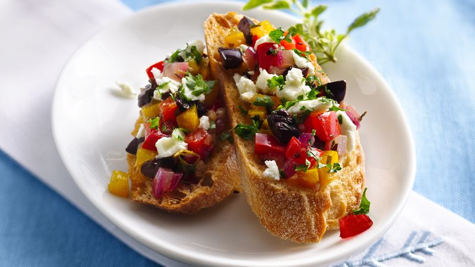

ASTROWORLD FOOD FOUNDATIONS
Athenian-Style Bruschetta
A Greek spin on a mediterranean appetizer! Fresh bell peppers, salty olives and tangy feta top toasted baguette slices.

Ingredients
- 1 loaf (18 inch) baguette French bread (8 oz), cut into 1/2-inch-thick slices (about 30)
- 3 tablespoons olive oil
- 1/2 cup finely chopped red bell pepper
- 1/2 cup finely chopped yellow bell pepper
- 3 tablespoons finely chopped red onion
- 2 cloves garlic, finely chopped
- 1/2 teaspoon salt
- 1/2 teaspoon chopped fresh oregano leaves
- 1/2 teaspoon chopped fresh thyme leaves
- 1/4 cup reduced-fat balsamic vinaigrette
- 20 pitted kalamata olives, finely chopped (1/3 cup)
- 1/4 cup crumbled feta cheese (1 oz)
- 3 tablespoons finely chopped fresh parsley, if desired
-
Steps
- 1 Heat oven to 375°F. In 15x10-inch pan with sides, place bread slices in single layer. Using pastry brush, lightly brush tops of slices with about 2 tablespoons of the oil. Bake 8 to 10 minutes or until lightly browned and crisp.
- 2 Meanwhile, in 10-inch nonstick skillet, heat remaining 1 tablespoon oil over medium-high heat 1 to 2 minutes or until hot. Add bell peppers, onion, garlic, salt, oregano and thyme. Cook 3 to 5 minutes, stirring occasionally, until vegetables are
crisp-tender.
- 3 Transfer vegetables to medium bowl. Add vinaigrette and olives; stir until vegetables are coated.
- 4 Top each bread slice with 1 teaspoon vegetable mixture. Sprinkle with cheese and parsley.
Greek Chicken Wings with Tzatziki Sauce
Everyone will love these delicious chicken wings with the lightly sweetened tzatziki sauce!
Ingredients
Chicken Wings
- 1 container (6 oz) Liberté® Méditerranée lemon yogurt
- 1/4 cup extra-virgin olive oil
- 2 tablespoons lemon juice
- 2 cloves garlic, finely chopped
- 1 tablespoon chopped fresh or 1 teaspoon dried dill weed
- 1 teaspoon salt
- 1/4 teaspoon pepper
- 24 Tzatziki Sauce
- 1/4 cup sour cream
- 1/4 cup chopped cucumber
- 2 tablespoons chopped red onion
- 1 tablespoon chopped fresh or 1 teaspoon dried dill weed
- 1/4 teaspoon salt
- 1 teaspoon lemon juice